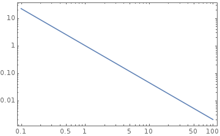

Stellar Energy Losses¶
Key:
Cooling speed of white dwarfs, and neutron stars
“Delay of helium ignition in low mass red giants”[Raffelt]
Helium burning lifetime
Evolution of Stars¶
Videos
Here is website that provides nice videos of evoution on HR digram, http://rainman.astro.illinois.edu/ddr/stellar/beginner.html
Main Sequence¶
Formation: gas clound condense due to EM radiation.
Negative Specific Heat
Gravitation dominated systems usually have negative specific heat. As the volume contracts, the star would be heated up, since specific heat is defined as
\[C = \frac{\delta Q}{dT}.\]Pressure, angular momentum, magnetic fields
IMF: [0.08, 100] \(\mathscr M_\odot\)
Salpeter’s IMF
\[\frac{dN}{d\mathscr M} \propto ( \mathscr M/\mathscr M_{\odot} )^{-1.35}\]Fig. 30 Salpeter’s IMF¶
Notice that \(\int x^{-n} dx = C + \frac{ x^{1-n} }{1-n}\).
First stars:
mass fraction of hydrogen \(X\sim 0.75\)
mass fraction of helium \(Y\sim 0.25\)
Sun:
metallicity: \(Z\sim 0.02\)
Mass loss:
stellar wind
supernova explosions
Limit of white dwarfs: 1.4 solar masses
Disk of spiral galaxies: active death and birth of stars
Spiral galaxies have old halo stars, globular clusters.
Milky Way: 150 of them, each with \(10^{6}\) stars.
Gravitational escape velocity of them: \(10\mathrm{km s^{-1}}\)
Escape velocity
From where?
Supernova explosion ejects at \(10^{3}\mathrm{km s^{-1}}\).
Supernova sweep whole globular cluster clean of gas.
Ah?
How?
No star formation
Good for stellar evolution research.
Viral theorem, negative specific heat -> contraction -> nuclear burning
determined by mass
HR diagram: \(\log ( L/L_\odot )\) ~ \(\log ( T_{\mathrm{eff}}/K )\), or luminosity ~ surface temperature, scaled with solar quantities
Most of the time the stars stay on the diagram
Sun: 1Gyr life, half gone
\(L\sim \mathscr M^3\)
\(\mathscr M/\mathscr M_\odot \leq 0.7 - 0.8\) stars are still alive
Globular cluster has turnoff: compare Fig. 2.2 and Fig. 2.3
MS mass-radius relation: \(R \sim \mathscr M^\xi\), for \(\mathscr M < \mathscr M_\odot\), \(\xi \sim 0.8\), for \(\mathscr M > \mathscr M_\odot\), \(\xi \sim 0.57\); The difference comes from the convective envolope. [rbc3]
Red Giant¶
Hydrogen consumed in center
Next step depends on the mass of the stars
For \(\mathscr M \leq 2 \mathscr M_\odot\)
New configuration forms from helium ashes in the center
Outer region expand -> Surface temperature drops -> Redder: red giant
Why
According to Stefan-Boltzman law?
\[j = \sigma T^4\]There exists a hydrogen burning shell -> Dumps He into core
He core is dense -> electrons degenerate -> mass-radius relation: \(R\sim \mathscr M^{-1/3}\) -> Mass of core increas leads to decrease in radius
Core gravitation: \(\Phi_c \sim - G \mathscr M_c / R_c \sim \mathscr M^{4/3}\)
Larger core mass -> Hotter hydrogen -> faster burning of hydrogen